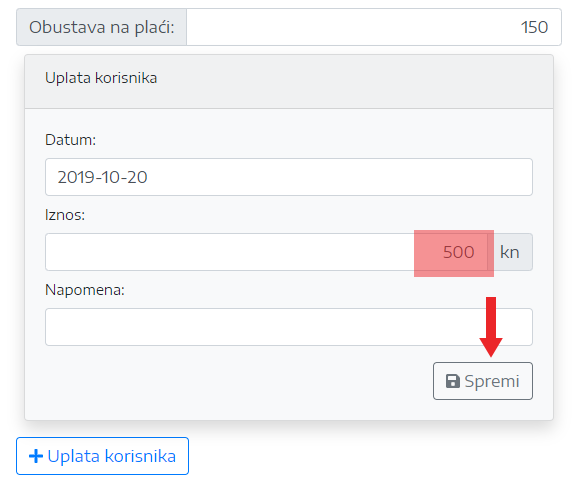

Prije početka rada u aplikaciji potrebno je urediti postavke.
Postavkama se pristupa kllikom na Postavke / Generalne Postavke u desnom izborniku
U generalne postavke spremaju se konstantne vrijednosti koje koriste na razini cijele aplikacije, a to su:
Za dodavanje nove poslovne jedinice kliknuti na dugme Plus.
Upisati kod (šifru) poslovne jedinice, naziv i kliknuti na Spremi.
Za dodavanje novog korisnika kase uzajamne pomoći u desnom izborniku kliknite na Novi korisnik. Popunite sva polja i kliknite na tipku Spremi.
Za ispis pristupnice u PDF formatu kliknuti na Kreiraj PDF. Nakon što je PDF kreiran kliknite na Preuzmi PDF.
Za pretragu korisnika kliknite na Korisnici, zatim u polje Pretraži... upišite ime ili prezime korisnika kojeg tražite i kliknite na ikonicu za pretragu ili tipku Enter.
Korisničkim podacima i kartici korisnika pristupate klikom na ikone označene na slici.
Kartici korisnika se pristupa klikom na Kartica korisnika ili preko pretrage korisnika (vidi točku 1.2)
Odabrati korisnika iz padajučeg izbornika, godinu i kliknuti na ikonu Filter.
Za isčlanjenje korisnika potrebno je otvoriti korisnički profil korisnika (vidi točku 1.2).
Pod status korinsnika odabrati Neaktivan, odabrati datum isčlanjenja i kliknuti Spremi.
U desnom izborniku kliknuti na Nova Pozajmica.
Odabrati korisnika, upisati iznos pozajmice i rok otplate u mjesecima ili iznos mjesečne rate za otplatu i kliknuti Spremi.
Za ispis kliknuti na PDF.
Za pretragu pozajmica kliknuti na Pozajmice u desnom izborniku.
Pretraživati se može po poslovnoj jedinici, mjesecu i godini ili po imenu i prezimenu korisnika pozajmice.
Za prikaz više detalja o pozajmici kliknuti na dugme označeno na slici.
U desnom izborniku kliknuti na Otplata Pozajmice.
Odabrati poslovnu jedinicu, mjesec godinu i kliknuti na dugme Filter.
Za odabranog korisnika kliknuti na strelicu u koloni Ugovorena rata ili ručno upisati željeni iznos u polje u koloni Uplaćeno
i kliknuti na tipku Spremi.
U desnom izborniku kliknuti na Uplata Uloga.
Odabrati poslovnu jedinicu, mjesec godinu i kliknuti na dugme Filter.
Za odabranog korisnika kliknuti na strelicu u koloni Ugovoreni ulog ili ručno upisati željeni iznos u polje u koloni Uplaćeno
i kliknuti na tipku Spremi.
Ukoliko korisnik sam želi izvršiti uplatu u tekućem mjesecu, treba kliknuti na dugme Uplata korisnika nakon čega se otvaraju nova poolja za unos. Upisati datum i iznos i kliknuti na dugme Spremi.

Pod ostale prihode i rashode spadaju troškovi održavanja računa, kamate po štednji i ostali troškovi.
Iz desnog izbornika odabrati vrstu troška, selektirati godinu i kliknuti na Filter.
Kliknuti na dugme Novi Unos, odabrati datum, upisati iznos i opis i kliknuti na dugme Spremi.
Za prikaz svih mjesečnih isplata sa žiro računa kliknuti na Mjesečna isplata.
Odabrati mjesec i godinu i kliknuti na Filter.
U tablici su prikazne sve isplate u tekućem mjesecu (isplate pozajmica, isplate kod iščćanjenja, troškovi održavanja računa i razni materijalni troškovi).
Za prikaz obustava na plaći kliknuti na Obustave Na Plaći.
Odabrati poslovnu jedinicu mjesec i godinu i kliknuti na Filter.
Moguć je prikaz ukupnih obustava (ulog + pozajmice) ili po poslovnim jedinicama.
Za prikaz temeljnice kliknuti na Temeljnica.
Odabrati mjesec i godinu i kliknuti na Filter.
U tablici su prikazne sve isplate u tekućem mjesecu (isplate pozajmica, isplate kod iščćanjenja, troškovi održavanja računa i razni materijalni troškovi).
Za prikaz Financijskih kartica kliknuti na Financijske Kartice.
Odabrati godinu i kliknuti na Filter.
Program daje ispis ukupnog prometa (mjesečno i kumulativno) za odabranu godinu i to za promet uloga, pozajmica, manipulativnih troškova, troškova održavanja računa,
kamata po štednji i raznih materijalnih troškova.
Za pregled bilance kliknuti na Bilanca.
Odabrati godinu i kliknuti na Filter.
U tablicama su dani podaci o ukupnim prihodima, rashodima i razlici rashoda i prihoda za odabranu godinu, kao i temeljnica.